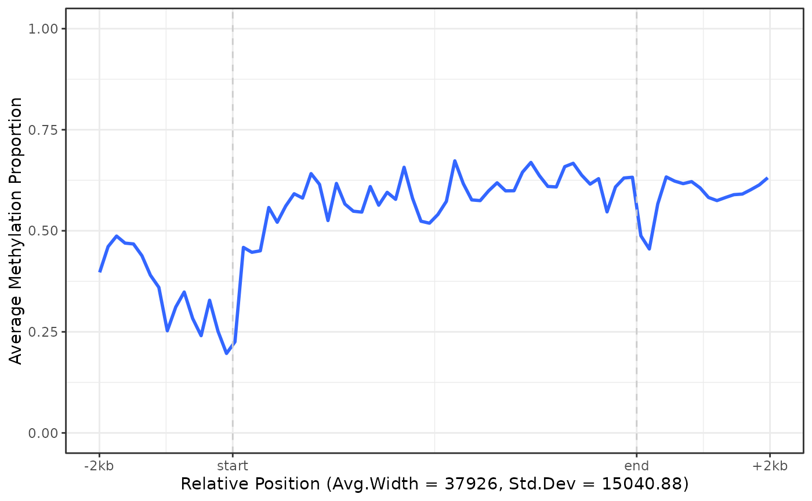
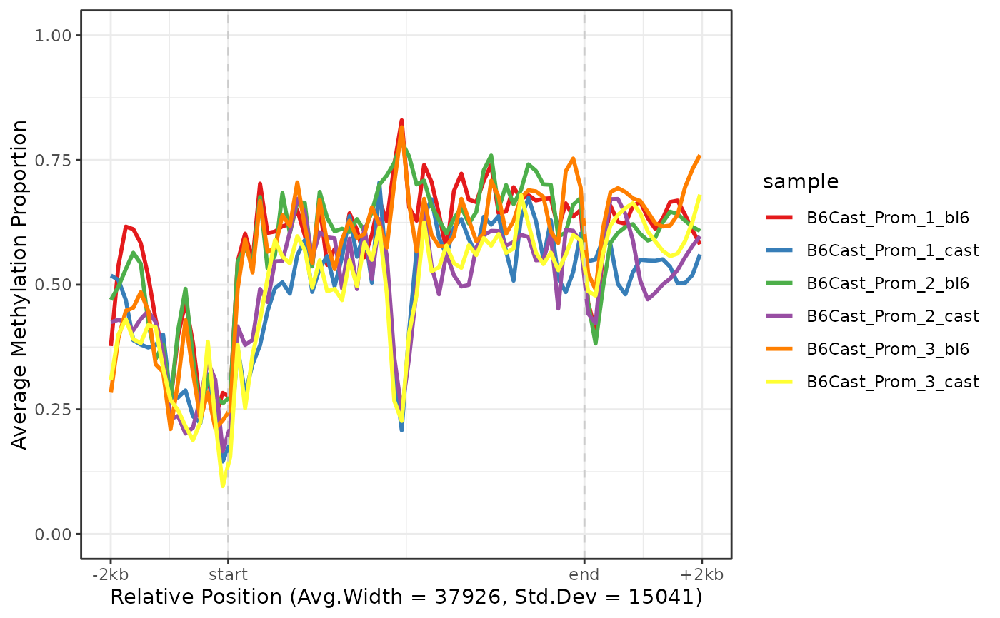
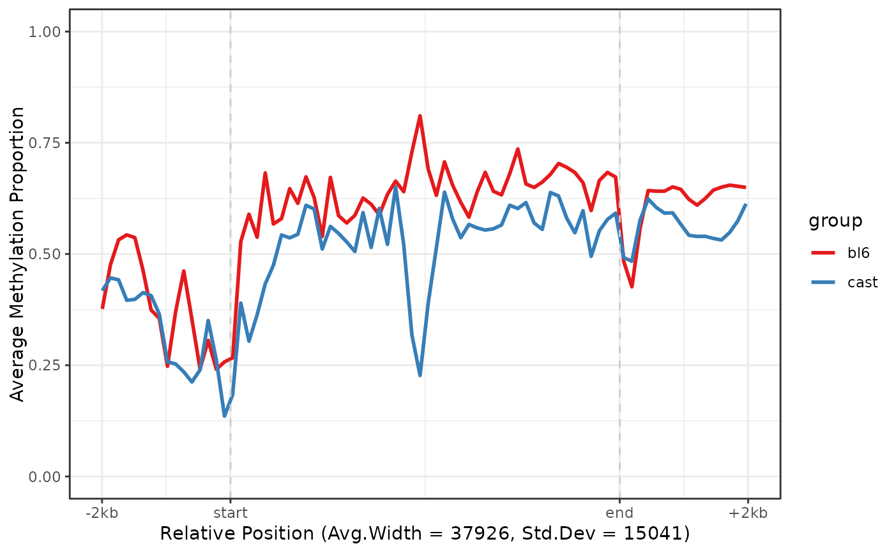

Plot aggregate regions
Usage
plot_agg_regions(
x,
regions,
binary_threshold = 0.5,
group_col = NULL,
flank = 2000,
stranded = TRUE,
span = 0.05,
palette = ggplot2::scale_colour_brewer(palette = "Set1")
)Arguments
- x
the NanoMethResult object.
- regions
a table of regions containing at least columns chr, strand, start and end. Any additional columns can be used for grouping.
- binary_threshold
the modification probability such that calls with modification probability above the threshold are considered methylated, and those with probability equal or below are considered unmethylated.
- group_col
the column to group aggregated trends by. This column can be in from the regions table or samples(x).
- flank
the number of flanking bases to add to each side of each region.
- stranded
TRUE if negative strand features should have coordinates flipped to reflect features like transcription start sites.
- span
the span for loess smoothing.
- palette
the ggplot colour palette used for groups.
Examples
nmr <- load_example_nanomethresult()
gene_anno <- exons_to_genes(NanoMethViz::exons(nmr))
plot_agg_regions(nmr, gene_anno)

plot_agg_regions(nmr, gene_anno, group_col = "sample")

plot_agg_regions(nmr, gene_anno, group_col = "group")
